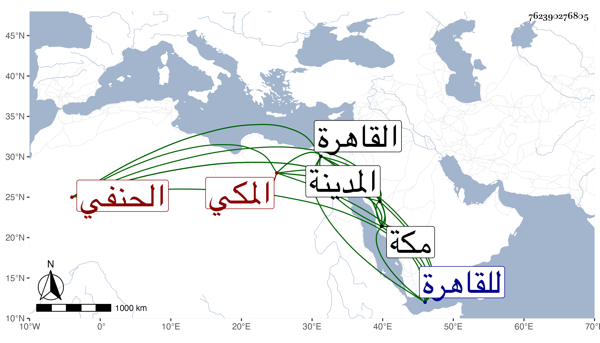

0902Sakhawi.DawLamic.ITO20230111-ara1.EIS1600.762390276805
Biography ID: 762390276805
1206
صالح بن الجمال أبي النجا محمد بن البهاء أبي البقاء محمد بن أحمد علم الدين المكي الحنفي أخو أبي القسم محمد الآتي ويعرف كسلفه بابن الضيا . ولد في جمادى الآخرة سنة أربع وخمسين وثمانمائة بمكة ونشأ بها فحفظ القرآن وكتبا وكنت ممن عرضها عليه بل سمع مني بمكة ، وحضر دروس أبيه ثم أخيه وقدم القاهرة صحبة الأمين الاقصرائي في سنة وفاته فأقام مع أخيه تحت نظره ثم بمسجده وتردد للبرهان الكركي وغيره ، ولم يذكر بفضيلة ولا همة له في هذا المعنى ، وقد توجه للقاهرة بحرا في سنة سبع وتسعين فبلغه الطاعون بها فالتفت إلى المدينة ثم رجع إلى مكة ثم عاد إلى القاهرة ، ورجع مع موسم سنة ثمان وتسعين وبين الاخوين تباين عظيم وذاك أعلى وأغلى .
